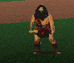
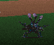

Mad God's Rage
| Betrayal at Krondor - Chapter 9 Mad God's Rage |
|
|
||
|
Find Makala in the Lifestone Chamber. | ||||
|
[HOME]
| ||||
|
The Lifestone Chamber, in the Sethanon Caverns, is surrounded by a Magical Shield
maintained by Six Tsurani Spellweavers employed by Makala. In order to enter the
Chamber, the Six must be killed. When, at last, Owyn and Pug enter the Chamber,
they will find Makala waiting for them. |
||||
| WALKTHROUGH Chapter 9 |
 |
To begin with, you may not be carrying a lot of Rations. If so, you should note that whenever
your Characters claim that they need sleep, an hour or two should be enough to rest them. Let's
save Rations here!
NOTE ON VERSION DIFFERENCES: In version 1.01 it was possible to get stuck
here, if you started the Chapter without any Rope. As a result, a lot of Rope was added in version
1.02. And a lot of Rations as well.
There are a lot of enemies in the Caverns: some of them are worth fighting for the
resources they're carrying, others are not. Also there are Chests down here: Moredhel, Locked
Trapped, and Ordinary - some are worth the trouble, others aren't. Money and Gemstones are utterly
useless, and don't burden yourself with useless Weapons and Armor you can pick up. The real treasures
here are Basic Items like Rations, Restoratives, Herbal Packs, Rope, etc. Any Enhancers and Combat
Items will be useful as well.
MAP OF THE UPPER LEVEL OF SETHANON CAVERNS

IF YOU EXIT NORTH you will first run into a Cave Giant and four
Beasthounds [Combat 06], and 3 Moredhel Warriors and a Spellcaster
[Combat 03]. A Trapped Chest (Skill > 63 - Damage: 60) nearby contains
some Restoratives, Herbal Packs, and both types of Bowstring. Go on, until you hit a North/South
corridor, go North, and enter a Room to the Right (East). Two Cave Giants and two Beasthounds
await you here [Combat 02]. One of the Giants has Rations, and
surprisingly one of the Beasthounds has two (useless) Items as well! Did he eat them?
The East Exit of this Room leads towards the Lifestone Chamber, but at this stage it is
protected by the Magical Shield.
IF YOU EXIT NORTH-WEST take the first side passage to the Right (North).
Go on, until you reach a broad West/East corridor. Ignore the first passage to the North - it is
Now it's time to locate the entrance to the Lower Level of the Sethanon Caverns. Fight
The first Room entered contains the BULL and PLOW Chests. Exit West, and tackle a Wind
Elemental (Strength=19), who can easily be killed with STRENGTH DRAIN
[Combat 03].
Exit West. For the
time being, ignore the side passage leading South, and go on into the West Room, where you'll
meet your first Tsurani [Combat 01]. Don't miss the STAKE and BOOK Chests here. Exit the Room, take the
South Passage, enter a Room and fight three Bulldrake Wyverns
[Combat 02]. Exit South. Ignore the side passages, and look out for
a PIT soon after the main passage bends Right (West).
You'll soon meet your second Tsurani, who is accompanied by his pet Wind Elemental
[Combat 11]. This Tsurani is the wimpiest of them all, since he
has no Spells to cast! The Elemental has Strength=30, meaning that both Pug and Owyn
must STRENGTH DRAIN him during the same Round (unless you have Infinity Pool). A side
passage to the West leads to the DEATH Chest.
Go back to the main passage, head South, and then East. You will end up in a Room containing
two Trapped Chests, both of which will cause massive Damage (200/250), if they explode.
Exit North into a Room containing two Grandsire Wyverns [Combat 12],
and the PROMISE Chest. Exit East.
At this point, the Caverns get rather convoluted. Whichever path you take,
you will ultimately locate the four remaining Tsurani. The below guide will indicate the
easiest path through, but also include the optional possibilities.

After you exit East from the above Room, you can go right ahead, enter a Room to the North,
fight the unique Servitor of Lims-Kragma [Combat 10], and find a
Chest. If you don't want to meet the Servitor, you should have taken the South passage, leading
to a Room where you'll meet your third Tsurani [Combat 09]. Exit
East, ignore a North side passage. When the main passage bends North, you have three choices.
(1) The East side passage leads to a Room where your fourth Tsurani [Combat 08]
is located.
You will soon enter a broad N/S corridor. A Trapped Chest near the South end contains useful
Items, and only requires Skill of 32%. Ignore the Left (West) passage. Your fifth Tsurani
[Combat 06] is waiting in a Room North of this corridor. Exit this
Room to the West, and then turn North, into a Room with three Hatchling Wyverns
[Combat 05]. The North Door of this Room will lead to the sixth,
and final Tsurani [Combat 04].
Now retrace your path through the Lower Level towards the Upper Level. When you reach
the Upper Level, retrace your path towards the Lifestone Chamber. Now that you've killed
the SIX, the Magical Shield will be lifted, and you can enter.
First you will meet the Aal Dragon (in the flesh), who will advise the Group. Gorath will be kept
behind, but Pug and Owyn must go forth in order to fight Makala and his two Dreads
[Combat 08]. After you've talked to Makala, and the Main Screen comes up,
PLEASE REMEMBER TO SAVE THE GAME.
Although Makala and his Dreads are by no means the most difficult Enemies in the game, they are
quite powerful (and Immune or partially Immune to a lot of Spells). Check out their Statistics! Makala's Spell Inventory
is surprisingly limited - he has FLAMECAST, MIND MELT, GRIEF OF 1000 NIGHTS, and UNFORTUNATE
FLUX. Use FETTERS OF RIME in order to freeze Makala. If you have TOUCH OF LIMS-KRAGMA, the Dreads can be killed quickly. The Horn of Algon
Kokoon is exremely helpful here - the Hounds will prevent Makala and the Dreads from Casting
any Spells. Summoning a Rusalka or two will help as well. On the defensive side, cast SKIN OF THE
DRAGON on both Characters as soon as possible.
The Webmaster has received DOZENS of suggestions on how to handle this Combat. I can't include
these suggestions here. All the same, it should be noted that if you're still holding on to
the IDOL OF LASSUR, you can kill Makala and the Dreads all too easily.
The Webmaster's favorite method of killing Makala involves FETTERS OF RIME, GAMBIT OF THE EIGHT and WINDS OF
EORTIS. First freeze Makala with FETTERS. Then place three GAMBIT OF THE
EIGHT Mines in line next to him. Finally have Pug (or Owyn) push him into the mines, using WINDS OF EORTIS.
Farewell, Makala! (Here's an illustration, in case you're puzzled.)
An interesting, but basically useless feature of the game can be accessed before entering the
Makala Combat.
Do not move an inch, but turn around until you face West. Here's the corridor back towards
where you came from. If your Stealth is very high, and if you cast the DRAGON'S BREATH Spell,
you can go back, re-enter the Oracle's Chamber, and find three Chests - one Ordinary, one Locked,
one Trapped. Disappointingly their contents are extremely BASIC: Restoratives, Herbal Packs, Rope,
Torch, UNFORTUNATE FLUX, etc.)
Once Makala has been killed, the final installment of the Story will be played out. Watch
carefully.
Congratulations on finishing BETRAYAL AT KRONDOR! Please be aware that you may have missed
a lot of the Game and Story, unless you've strictly followed the Walkthroughs, and
checked all the Options. Building on the experience gained from your FIRST TIME through
the game, a SECOND, and even a THIRD TIME may yield additional satisfaction. This game is
extremely replayable. The Webmaster has received dozens of letters from BAK fans, who
confess to having played BAK repeatedly - the current record is SEVEN TIMES!
The final Chapter is confined to the Caverns underneath Sethanon. There are no sub-Quests.
At the beginning Gorath, Owyn and Pug will meet James and Locklear briefly, and then teleport
into the Caverns.
 Gorath should now be carrying the Guarda Revanche, and at least two Characters should be equipped with suits of
Valheru Armor. If so, you shouldn't have much to worry about, if you're careful.
Gorath should now be carrying the Guarda Revanche, and at least two Characters should be equipped with suits of
Valheru Armor. If so, you shouldn't have much to worry about, if you're careful.

 empty. If you go on West along this corridor, you will meet five Moredhel Warriors
[Combat 04], and ultimately reach the entrance to the Lower
Level. Don't do so now - rather take the second Northern passage, and meet three Moredhel Warriors and two Beasthounds
[Combat 01]. If you don't have a Virtue Key, make sure you get it from one of the Moredhel
corpses. Go on North, and you'll end up in the Room (described above) leading to the Lifestone Chamber.
empty. If you go on West along this corridor, you will meet five Moredhel Warriors
[Combat 04], and ultimately reach the entrance to the Lower
Level. Don't do so now - rather take the second Northern passage, and meet three Moredhel Warriors and two Beasthounds
[Combat 01]. If you don't have a Virtue Key, make sure you get it from one of the Moredhel
corpses. Go on North, and you'll end up in the Room (described above) leading to the Lifestone Chamber. Combat 04 (mentioned above), and exit the corridor to the
Combat 04 (mentioned above), and exit the corridor to the
 West. If you go South now, you can fight two Cave Giants [Combat 05],
and try your hand at opening a Locked Chest. If you go North, you'll soon need a Virtue Key in
order to open a Locked Door.
Enter the Room, and make sure you don't miss the PIPE Chest, which
contains some very useful Items, among them a Powder Bag and an Infinity Pool. The Northern Exit
of this Room leads to the Lower Level of the Caverns.
West. If you go South now, you can fight two Cave Giants [Combat 05],
and try your hand at opening a Locked Chest. If you go North, you'll soon need a Virtue Key in
order to open a Locked Door.
Enter the Room, and make sure you don't miss the PIPE Chest, which
contains some very useful Items, among them a Powder Bag and an Infinity Pool. The Northern Exit
of this Room leads to the Lower Level of the Caverns. Now enter the Lower Level, in order to locate and kill the Six Tsurani Spellweavers.
Fortunately they are loners, so you will never need to deal with more than one at a time.
Rather surprisingly they are quite easy to kill, much easier than some other Enemies met
here!
Now enter the Lower Level, in order to locate and kill the Six Tsurani Spellweavers.
Fortunately they are loners, so you will never need to deal with more than one at a time.
Rather surprisingly they are quite easy to kill, much easier than some other Enemies met
here! Before trying, save your game, and remember to cast Scent of Sarig.
The Eastern Chest requires Lockpicking Skill 78 (or higher) in order to be deactivated. It will yield some
nice Items. The Western Chest requires
Skill 92 (or higher) in order to be deactivated. It contains a Staff
of Macros, and (in version 1.02 only) the invaluable FIRESTORM Scroll! [You will now be grateful if
you've held on to all those Amulets of the Upright Man.]
Before trying, save your game, and remember to cast Scent of Sarig.
The Eastern Chest requires Lockpicking Skill 78 (or higher) in order to be deactivated. It will yield some
nice Items. The Western Chest requires
Skill 92 (or higher) in order to be deactivated. It contains a Staff
of Macros, and (in version 1.02 only) the invaluable FIRESTORM Scroll! [You will now be grateful if
you've held on to all those Amulets of the Upright Man.]
(2) Further on, a West passage will lead to a Trapped Chest,
requiring Skill 74 (or higher). If you already have UNFORTUNATE FLUX and WINDS OF EORTIS, leave
this Chest alone.
(3) Going straight North will involve you in an
unnecessary fight with five Highland Ogres
[Combat 07]. Go (back) to the East Room
[Combat 08]. After killing the Tsurani,
exit this Room to the East.